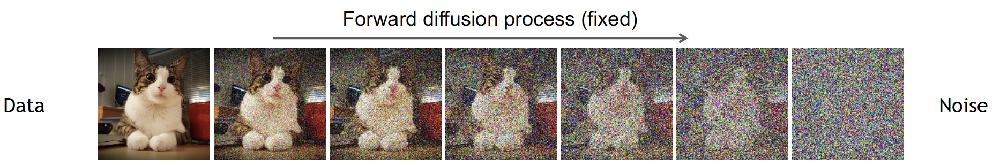
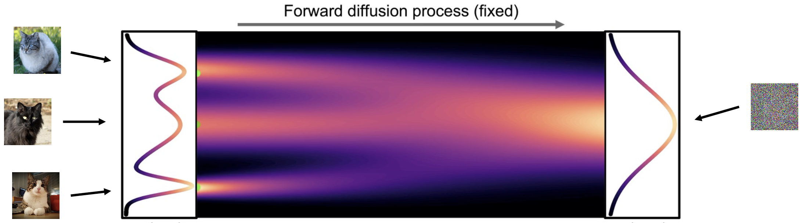
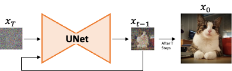
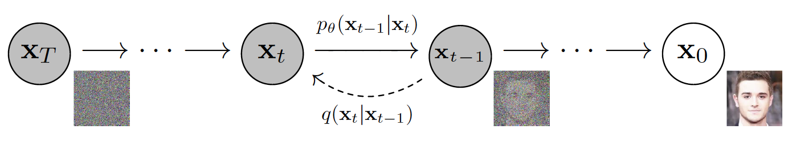
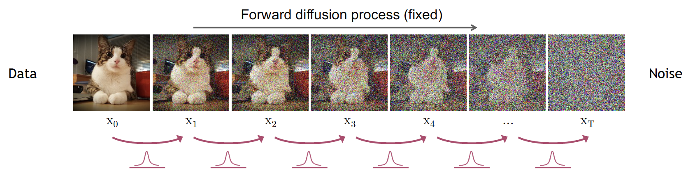
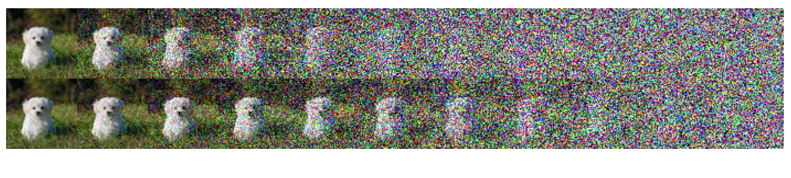

Notes on Diffusion Models
1. Introduction
Diffusion models are a class of generative models inspired by the idea in Non-Equilibrium Statistical Physics, which states:
We can gradually convert one distribution into another using a Markov chain
The essential idea is to first systematically and gradually destroy the structure of the data distrubution by a diffusion process. Then, learn a model for the reverse process to restore the data. This two step yield a high flexible generative model for the data with the following advantages 1) it is easy to sample points from the learned distribution, 2) the data becomes "explainable" as the learned distribution is simpler than the original, and 3) samples become more diverse as it is easier to avoid the "collapsing mode effect".
2. Diffusion Process Overview
Diffusion generative models are composed of two steps: 1) a forward diffusion process where we add noise to the image, and 2) a reverse diffusion process were we denoise until obtaining the original data. In our context we will consider that data samples are images. While the first step can be easily achieved, we need a model to learn how to denoise the image into a meaningful example in our distribution.
Forward diffusion process
The goal in the forward process is to convert a complex distribution to an easier one where sampling is not difficult, and achieving some level of explainability.
The process starts by slowly and iteratively add random noise to corrupt the data, such that it moves away from its original distribution. Noise is iteratively injected into the data following a schedule that controls the "amount". Adding noise for \(T\) steps leads the data to be unrecognizable and part of a different distribution, e.g. isotropic gaussian after iteratively adding gaussian noise.

Ideally the data is transformed into a distribution where is easy to sample, e.g. we transform the distribution of images with cats to an isotropic gaussian distribution.

Reverse diffusion process
The goal is to recover the original distribution from the less complex and more tractable data distribution. This is achieved by iteratively applying a denoising model to the input corrupted data. At each step in reverse \(t\) the model predicts the denoised data \(x_{t-1}\) from input \(x_t\).

Why do we need to iteratively denoise the data? Why not going directly from noise to true data sample in a single step? Short answer: predicting these "small perturbations" is more tractable than attempting to describe the full data in a single step. Think about going back from one subspace to another following the traces of your original path.
3. Some "formality"

In a diffusion process, both fowrward and backward steps are modeled by a Markov process. The forward process, defined by the transitions \(q(x_t|x_{t-1})\), is modeled by a Markov chain that gradually adds Gaussian noise according to a fixed schedule. The reverse process \(p_{\theta} (x_{t-1}|x_t)\) is also a Markov chain with learned distribution parameters \(\theta\).
Forward process
The forward process is modeled by a fixed Markov chain that corrupts the input data with Gaussian noise with fixed variance schedule parametrized with \(\beta \in [0,1]\).

The joint probability distribution of the forward diffusion process is given by
\[ q(x_{1:T}|x_0) = \prod_{t=1}^Tq(x|x_{t-1}). \]The transition potentials are modeled by a Gaussian kernel:
\[ q(x_t|x_{t-1}) = \mathcal{N}(x_t;\sqrt{1-\beta_t}x_{t-1}, \beta_t\mathbf{I}). \]Given a sufficiently large \(T\), and a stable schedule for \(\beta_t\) the last sample is an isotropic Gaussian standard normal distribution \(x_T \sim \mathcal{N}(\mathbf{0}, \mathbf{I})\).
Variance Schedule
The variance \(\beta\), also known as "diffusion rate", controls the inclusion of noise in the data. The variance \(\beta_t\) of the process at each step \(t\) is computed with a fixed schedule and adds Gaussian noise to the data in the previous step \(x_t\).
Given \(x_0\) and \(t\) we can compute any \(x_t\) using the reparametrization trick \(\mathbf{z} = \boldsymbol{\mu}_x + \boldsymbol{\sigma}_x\epsilon \):
\[ x_t = \sqrt{1-\beta_t}x_{t-1} + \sqrt\beta_t\mathbf{I}\epsilon. \]Applying this formulation allows us to genearte samples for each time step iteratively: compute for \(x_1\), then for \(x_3\), then \(x_4\) and so on. Yet, there is a direct way to go from \(x_0\) to any desired \(t\) (e.g. \(t=0\) to \(t=4\)). To do so we apply a change of variable
\[ \alpha_t = 1-\beta_t, \ \ \ \ \text{ a cumulative until time $t$ } \ \ \ \bar{\alpha}_t = \prod_{s=1}^t\alpha_s. \]Replacing and using the parametrization trick
\[ x_t = \sqrt{1-\beta_t}x_{t-1}+\sqrt\beta_t\epsilon_{t}, \ \ \text{ by replacing}\ \alpha_t \ \ x_{t}=\sqrt\alpha_t x_{t-1} + \sqrt{1-\alpha_t}\epsilon_t \]Applying it for the \(t-1\) step \(x_{t-1}\)
\[ x_{t-1}=\sqrt{\alpha_{t-1}}x_{t-2}+\sqrt{1-\alpha_{t-1}}\epsilon_{t-1} \]Note the step added to noise. Then, replacing \(x_{t-1}\) in the original
\[ x_{t}=\sqrt{\alpha_t\alpha_{t-1}}x_{t-2}+\underbrace{\sqrt{\alpha_t(1-\alpha_{t-1})}\epsilon_{t-1} + \sqrt{1-\alpha_t}\epsilon_t} \]The sub-braced terms are samples of two independent normal distributions \(\mathcal{N}_1(0, \alpha_t(1-\alpha_{t-1}))\) and \(\mathcal{N}_2(0, 1-\alpha_t)\). The sum of any sample of these distributions is a normal distribution with parameters \(\mathcal{N}(0, \alpha_t(1-\alpha_{t-1}) + (1-\alpha_t))\) giving \(\mathcal{N}(0, 1-\alpha_t\alpha_{t-1})\). Applying the reparametrization trick we obtain
\[ x_{t}=\sqrt{\alpha_t\alpha_{t-1}}x_{t-2}+\sqrt{1 -\alpha_t\alpha_{t-1}}\epsilon. \]We apply the same for \(x_{t-2}\) and all the way down to \(t=0\) to finally obtain
\[ x_{t}=\sqrt{\bar{\alpha}_t}x_{0}+\sqrt{1-\bar\alpha_{t}}\epsilon, \] and write the diffusion kernel \[ q(x_t|x_0) = \mathcal{N}(\sqrt{\bar\alpha}x_0, (1 - \bar\alpha) \mathbf I). \]Types of \(\beta_t\) scheduling
Linear schedule. In [2] the authors proposed to use a linear scheduling going from \(\beta_1=10^{−4}\) up to \(\beta_T=0.02\). This was per se an improvement from the original paper in 2015 [1]. However, this schedule is rather aggressive in the way that images lost information from way too early in the process.
Cosine schedule. The paper in [3] the proposed a softer schedule that prevents the information loss too early in the forward process. They introduced a cosine schedule of the following:
\[ \beta_t=\text{clip}(1-\frac{\bar\alpha_t}{\bar\alpha_{t-1}}, 0.999) \text{where} \bar\alpha_t=f(t)/f(0) \text{and} f(t)=\cos(\frac{t/T+s}{1+s}\cdot\frac{\pi}{2})^2 \]
Sample python code of the forward diffusion process
# Sample from forwad diffusion process given a schedule, time step, and x0.
def forward_diffusion(x0, sqrt_alpha_cumulative, sqrt_one_minus_alpha_cumulative, timestep):
# x0: Tensor of shape [bs, C, H, W] containing original images.
# sqrt_alpha_cumulative: Tensor of shape [T], containing cumulative schedule: \sqrt{\bar\alpha}.
# sqrt_one_minus_alpha_cumulative: Tensor of shape [T], containing cumulative schedule \sqrt{1 - \bar\alpha}.
# timestep: Time step to obtain a sample from.
# Get random noise from a standard Gaussian distribution N(0, I)
epsilon = torch.randn_like(x0)
# Now we apply the forward step using the reparametrization trick
# z = mean_x + \sigma_x * \epsilon
# x_t = \sqrt{\bar\alpha_t}*x_0 + \sqrt(1-\bar\alpha_t)*\epsilon
mean = sqrt_alpha_cumulative[timestep] * x0
std_dev = sqrt_one_minus_alpha_cumulative[timestep]
sample = mean + std_dev * epsilon
return sample, epsilon
Reverse process
The reverse process is also modeled by a Markov chain. In it we attempt to reconstruct the input \(x_0\) from the corrupted noised image \(x_T\). For small \(\beta_t\) the reverse conditional \(q(x_{t-1}|x_t)\) is also a normal distribution.